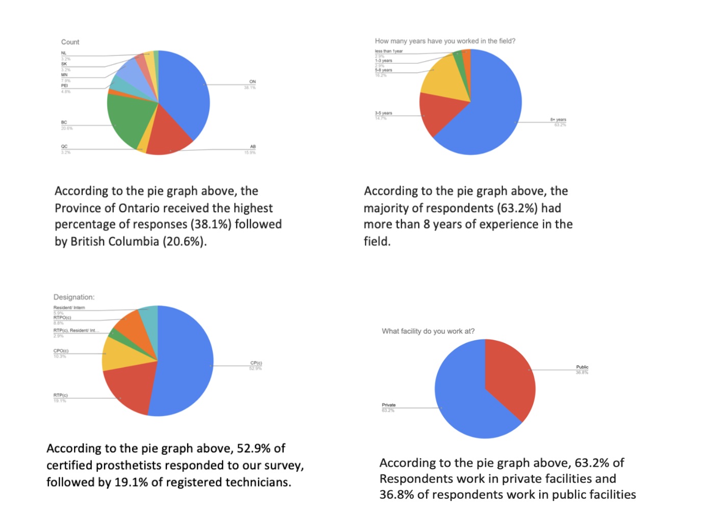

The survey was delivered electronically and distributed to professionals in the field via email. The survey included both open-ended and closed-ended questions allowing respondents to express their thoughts and opinions on cosmesis and how it relates to patient device retention. We sent the survey to 213 professionals across Canada and received 68 responses, yielding a 32% response rate. Through the Orthotics and Prosthetics Canada website, we obtained contact information from professionals and received responses from certified prosthetists, registered prosthetic technicians, dual certified clinicians and technicians, residents and interns.
____________________________________

- This survey was a Qualitative survey is not an accurate representation of the whole population- what it does is to provide us some insight into the experiences of people working in the field
- Small sample size (6 participants)
- Geographically limited- only clinics within Ontario
- Biased results ( patient opinion not accounted for)
- Not a randomized control trial